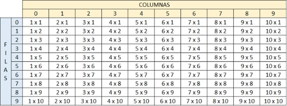

1. Crear un vector de tipo Entero con 5 posiciones, llenarlo con información solicitada al usuario. Después de recoger toda la información, se requiere imprimir el índice de cada posición en el arreglo con su valor de la siguiente manera:
[0] = 55
[1] = 99
[2] = 11
[3] = 56
[4] = 69
Algoritmo Taller4_P1
Definir valores Como Entero;
Definir datos Como Entero;
Dimension datos[5];
Definir i Como Entero;
Para i<-0 Hasta 4 Con Paso 1 Hacer
Escribir "Digite los valores";
Leer valores;
datos[i]<-valores;
Limpiar Pantalla;
FinPara
Para i<-0 Hasta 4 Con Paso 1 Hacer
Escribir "[",i,"] = ",datos[i];
FinPara
FinAlgoritmo
2. Crear un arreglo de números enteros de 20 posiciones, el cual, debe ser llenado con números aleatorios entre 1 y 100; después de haber llenado dicho arreglo, se debe volver a recorrer utilizando un ciclo diferente al que se usó para llenarse e imprimir los números pares e impares. Ejemplo
Números pares: 2, 4, 6, 8, 10
Números impares: 1, 3, 5, 7, 9,
Algoritmo Taller4_P2
Definir datos Como Entero;
Dimension datos[20];
Definir i Como Entero;
Definir j Como Entero;
Definir k Como Entero;
Para i<-0 Hasta 19 Con Paso 1 Hacer
datos[i] <- azar(100);
FinPara
j<-0;
k<-0;
Escribir "Pares " Sin Saltar;
Mientras j<20 Hacer
Si datos[j] mod 2=0 Entonces
Escribir datos[j], " " Sin Saltar;
FinSi
j<-j+1;
FinMientras
Escribir " ";
Escribir "Impares " Sin Saltar;
Mientras k<20 Hacer
Si datos[k] mod 2<>0 Entonces
Escribir datos[k], " " Sin Saltar;
FinSi
k<-k+1;
FinMientras
FinAlgoritmo
3. Imprimir los números primos del 1 al 1000, el resultado debe ser buscado de forma matemática.
Algoritmo Taller4_P3
Definir datos Como Entero;
Dimension datos[1000];
Definir i Como Entero;
Definir j Como Entero;
Definir contador Como Entero;
contador<-0;
Para i<-0 Hasta 999 Con Paso 1 Hacer
datos[i]<-i+1;
FinPara
Para i<-1 hasta 1000 Con Paso 1 Hacer
Para j<-1 Hasta i Con Paso 1 Hacer
si datos[i-1] mod j = 0 Entonces
contador<-contador+1;
FinSi
FinPara
si contador=2 Entonces
Escribir datos[i-1];
FinSi
contador<-0;
FinPara
FinAlgoritmo
4. Dada la siguiente matriz bidimensional, el cual debe de quemar en el código.
01 02 03 04 05
06 07 08 09 10
11 12 13 14 15
16 17 18 19 20
Utilizando el conocimiento adquirido, a excepción de hacerlo de forma manual, imprima la siguiente matriz bidimensional.
01 02 03 04 05
10 09 08 07 06
11 12 13 14 15
20 19 18 17 16
Algoritmo Taller4_P4
Definir fila, columna Como Entero;
Definir matriz Como Caracter;
Dimension matriz[4,5];
matriz[0,0] <- "01";
matriz[0,1] <- "02";
matriz[0,2] <- "03";
matriz[0,3] <- "04";
matriz[0,4] <- "05";
matriz[1,0] <- "06";
matriz[1,1] <- "07";
matriz[1,2] <- "08";
matriz[1,3] <- "09";
matriz[1,4] <- "10";
matriz[2,0] <- "11";
matriz[2,1] <- "12";
matriz[2,2] <- "13";
matriz[2,3] <- "14";
matriz[2,4] <- "15";
matriz[3,0] <- "16";
matriz[3,1] <- "17";
matriz[3,2] <- "18";
matriz[3,3] <- "19";
matriz[3,4] <- "20";
Para fila<-0 Hasta 3 Con Paso 1 Hacer
Para columna<-0 Hasta 4 Con Paso 1 Hacer
Escribir matriz[fila,columna], " " Sin Saltar;
FinPara
Escribir " ";
FinPara
Escribir " ";
Para fila<-0 Hasta 3 Con Paso 1 Hacer
Si fila=0 o fila=2 Entonces
Para columna<-0 Hasta 4 Con Paso 1 Hacer
Escribir matriz[fila,columna], " " Sin Saltar;
FinPara
Escribir " ";
SiNo
Para columna<-4 Hasta 0 Con Paso -1 Hacer
Escribir matriz[fila,columna], " " Sin Saltar;
FinPara
Escribir " ";
FinSi
FinPara
FinAlgoritmo
5. Se debe de imprimir el siguiente cuadro.

Algoritmo Taller4_P5
Definir fila, columna Como Entero;
Definir matriz Como Entero;
Dimension matriz[10,10];
Definir resultados Como Entero;
Dimension resultados[10,10];
Definir i Como Entero;
Definir j Como Entero;
Definir filausuario, columnausuario Como Entero;
Para fila<-1 hasta 10 con Paso 1 Hacer
si fila<>10 Entonces
para columna<-1 Hasta 10 con Paso 1 Hacer
Escribir columna, " X ", fila, " " Sin Saltar;
FinPara
Escribir " ";
SiNo
para columna<-1 Hasta 10 con Paso 1 Hacer
Escribir columna, " X ", fila, " " Sin Saltar;
FinPara
Escribir " ";
FinSi
FinPara
Para fila<-0 Hasta 9 Con Paso 1 Hacer
Para columna<-0 Hasta 9 Con Paso 1 Hacer
resultados[columna, fila]<- (fila+1)*(columna+1);
FinPara
FinPara
Escribir "Digita el número de la fila y de la columna para ver el resultado";
Leer filausuario;
leer columnausuario;
Escribir resultados[filausuario, columnausuario];
FinAlgoritmo
6. Video